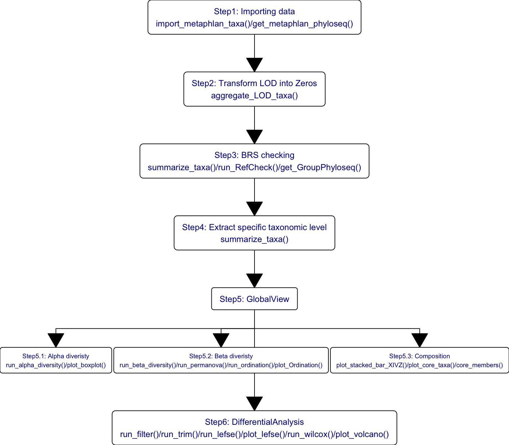
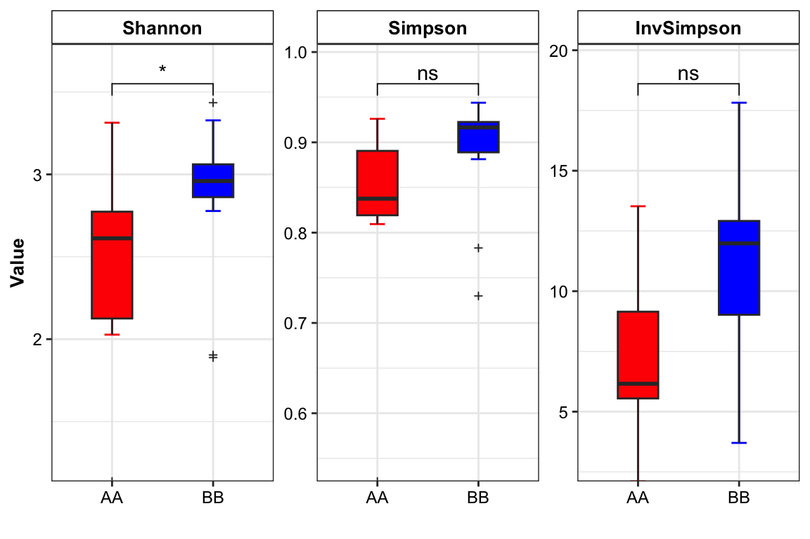
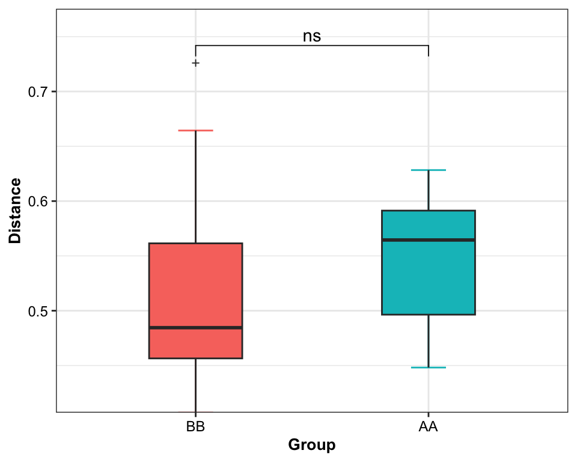

Chapter 7 Microbial composition
Loading packages
library(XMAS)
library(dplyr)
library(tibble)
library(phyloseq)
library(ggplot2)
library(ggpubr)A whole picture of the microbial composition.
7.1 Stacked barplot
- XMAS package
plot_StackBarPlot(
ps=metaphlan2_ps_final,
taxa_level="Phylum",
group = "Group",
cluster = TRUE)

Figure 7.1: Microbial composition
- XVIZ package
plot_stacked_bar(
phyloseq = metaphlan2_ps_final,
level = "Phylum",
feature = "Group")

Figure 7.2: Microbial composition in XVIZ
7.2 Core microbiota
prevalences <- seq(0.05, 1, 0.05)
detections <- 10^seq(log10(1e-3), log10(0.2), length = 10)
pl_core <- plot_core_taxa(metaphlan2_ps_final,
plot.type = "heatmap",
colours = gray(seq(0, 1, length=5)),
prevalences = prevalences,
detections = detections,
min.prevalence = 0.5)+
xlab("Detection Threshold (Relative Abundance (%))")
pl_core

Figure 7.3: Core taxa
The degree of color indicates the size of abundance and prevalence.
- Use
core_membersto obtain the core taxa. detection for abundance and prevalence for occurrence.
core_taxa_name <- core_members(metaphlan2_ps_final, detection = 0.01, prevalence = 0.5)
print(core_taxa_name)## [1] "s__Bacteroides_uniformis" "s__Bacteroides_vulgatus" "s__Faecalibacterium_prausnitzii"
## [4] "s__Ruminococcus_sp_5_1_39BFAA"Result:
Only 4 genera (s__Bacteroides_uniformis, s__Bacteroides_vulgatus, s__Faecalibacterium_prausnitzii and s__Ruminococcus_sp_5_1_39BFAA) passed the threshold of detection and prevalence which we choose.
7.3 Systematic Information
sessionInfo()## R version 4.1.2 (2021-11-01)
## Platform: x86_64-apple-darwin17.0 (64-bit)
## Running under: macOS Monterey 12.2.1
##
## Matrix products: default
## LAPACK: /Library/Frameworks/R.framework/Versions/4.1/Resources/lib/libRlapack.dylib
##
## locale:
## [1] en_US.UTF-8/en_US.UTF-8/en_US.UTF-8/C/en_US.UTF-8/en_US.UTF-8
##
## attached base packages:
## [1] stats graphics grDevices utils datasets methods base
##
## other attached packages:
## [1] RColorBrewer_1.1-2 viridis_0.6.2 viridisLite_0.4.0 ggpubr_0.4.0 ggplot2_3.3.5 phyloseq_1.38.0
## [7] tibble_3.1.6 dplyr_1.0.8 XMAS_2.1.0
##
## loaded via a namespace (and not attached):
## [1] utf8_1.2.2 reticulate_1.24 tidyselect_1.1.2 RSQLite_2.2.10
## [5] AnnotationDbi_1.56.2 htmlwidgets_1.5.4 grid_4.1.2 BiocParallel_1.28.3
## [9] Rtsne_0.15 munsell_0.5.0 codetools_0.2-18 DT_0.21
## [13] umap_0.2.8.0 withr_2.5.0 colorspace_2.0-3 Biobase_2.54.0
## [17] highr_0.9 knitr_1.37 rstudioapi_0.13 pscl_1.5.5
## [21] stats4_4.1.2 bayesm_3.1-4 robustbase_0.93-9 ggsignif_0.6.3
## [25] MatrixGenerics_1.6.0 labeling_0.4.2 optparse_1.7.1 mbzinb_0.2
## [29] GenomeInfoDbData_1.2.7 lpsymphony_1.22.0 pheatmap_1.0.12 bit64_4.0.5
## [33] farver_2.1.0 rhdf5_2.38.1 vctrs_0.3.8 generics_0.1.2
## [37] TH.data_1.1-0 xfun_0.30 Maaslin2_1.8.0 R6_2.5.1
## [41] GenomeInfoDb_1.30.1 locfit_1.5-9.5 RcppZiggurat_0.1.6 bitops_1.0-7
## [45] rhdf5filters_1.6.0 cachem_1.0.6 DelayedArray_0.20.0 assertthat_0.2.1
## [49] scales_1.1.1 multcomp_1.4-18 nnet_7.3-17 gtable_0.3.0
## [53] sandwich_3.0-1 rlang_1.0.2 genefilter_1.76.0 splines_4.1.2
## [57] protoclust_1.6.3 rstatix_0.7.0 broom_0.7.12 checkmate_2.0.0
## [61] yaml_2.3.5 reshape2_1.4.4 abind_1.4-5 crosstalk_1.2.0
## [65] backports_1.4.1 Rfast_2.0.6 qvalue_2.26.0 Hmisc_4.6-0
## [69] DiagrammeR_1.0.9 tensorA_0.36.2 tools_4.1.2 bookdown_0.24
## [73] zCompositions_1.4.0 ellipsis_0.3.2 gplots_3.1.1 jquerylib_0.1.4
## [77] biomformat_1.22.0 BiocGenerics_0.40.0 Rcpp_1.0.8.2 plyr_1.8.6
## [81] visNetwork_2.1.0 base64enc_0.1-3 zlibbioc_1.40.0 purrr_0.3.4
## [85] RCurl_1.98-1.6 rpart_4.1.16 openssl_2.0.0 Wrench_1.12.0
## [89] cowplot_1.1.1 S4Vectors_0.32.3 zoo_1.8-9 SummarizedExperiment_1.24.0
## [93] ggrepel_0.9.1 cluster_2.1.2 magrittr_2.0.2 data.table_1.14.2
## [97] RSpectra_0.16-0 truncnorm_1.0-8 mvtnorm_1.1-3 matrixStats_0.61.0
## [101] ALDEx2_1.26.0 corncob_0.2.0 RAIDA_1.0 evaluate_0.15
## [105] xtable_1.8-4 XML_3.99-0.9 jpeg_0.1-9 IRanges_2.28.0
## [109] gridExtra_2.3 shape_1.4.6 compiler_4.1.2 KernSmooth_2.23-20
## [113] crayon_1.5.0 htmltools_0.5.2 mgcv_1.8-39 pcaPP_1.9-74
## [117] Formula_1.2-4 tidyr_1.2.0 geneplotter_1.72.0 libcoin_1.0-9
## [121] DBI_1.1.2 corrplot_0.92 biglm_0.9-2.1 MASS_7.3-55
## [125] compositions_2.0-4 Matrix_1.4-0 ade4_1.7-18 getopt_1.20.3
## [129] car_3.0-12 permute_0.9-7 cli_3.2.0 parallel_4.1.2
## [133] igraph_1.2.11 GenomicRanges_1.46.1 pkgconfig_2.0.3 coin_1.4-2
## [137] foreign_0.8-82 foreach_1.5.2 annotate_1.72.0 bslib_0.3.1
## [141] multtest_2.50.0 XVector_0.34.0 NADA_1.6-1.1 stringr_1.4.0
## [145] digest_0.6.29 vegan_2.5-7 Biostrings_2.62.0 rmarkdown_2.13
## [149] htmlTable_2.4.0 edgeR_3.36.0 gtools_3.9.2 modeltools_0.2-23
## [153] lifecycle_1.0.1 nlme_3.1-155 jsonlite_1.8.0 Rhdf5lib_1.16.0
## [157] carData_3.0-5 askpass_1.1 limma_3.50.1 fansi_1.0.2
## [161] pillar_1.7.0 lattice_0.20-45 KEGGREST_1.34.0 fastmap_1.1.0
## [165] httr_1.4.2 DEoptimR_1.0-10 survival_3.3-1 glue_1.6.2
## [169] png_0.1-7 iterators_1.0.14 glmnet_4.1-3 bit_4.0.4
## [173] stringi_1.7.6 sass_0.4.0 metagenomeSeq_1.36.0 blob_1.2.2
## [177] DESeq2_1.34.0 latticeExtra_0.6-29 caTools_1.18.2 memoise_2.0.1
## [181] ape_5.6-2